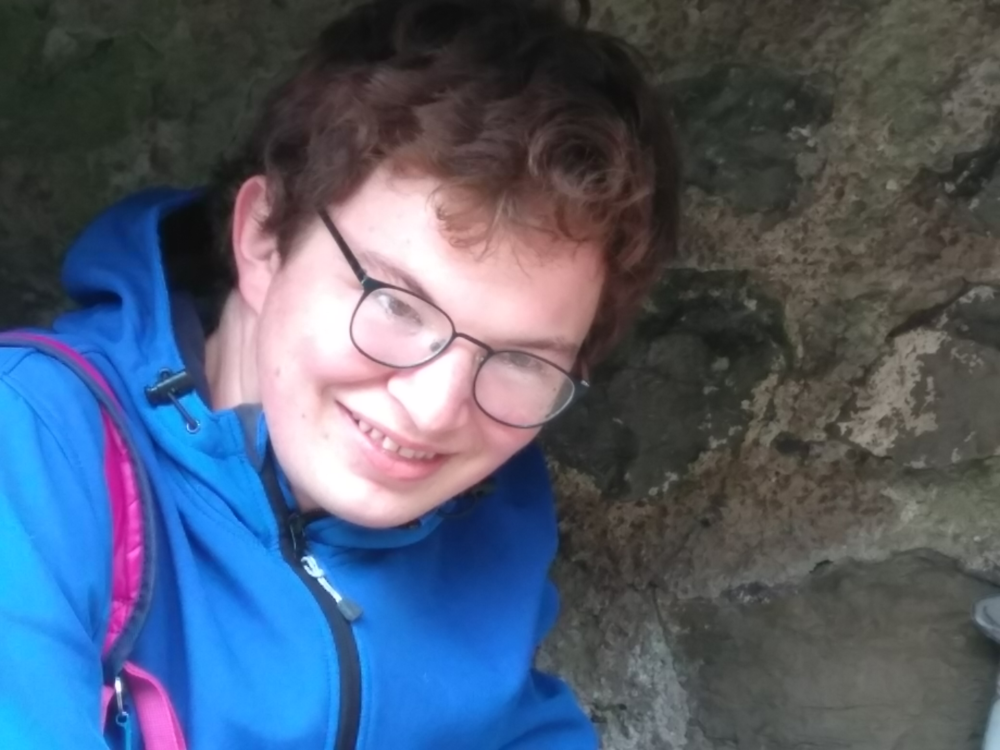

About Us
We should probably introduce ourselves. Hello, we are James and Matthew, but seeing as you are here, you probably already knew that.
We met in secondary school, and bonded during maths, Latin and ICT lessons. We are both primarily mathematicians, and we are now
both studying PhDs, James in Exeter and Matthew in Leeds.
Our precursors to NT began in Year 10, but it took until upper sixth form for the real adventures to start. We set off on our first
nutty train adventure together during Christmas 2018, and then spent our remaining time in sixth form going on plenty of interesting adventures
across South Wales, and starting to venture beyond, ticking off every station in the area apart from one.
We spent 2019/2020 in our respective universities (Exeter and Imperial), meeting up occasionally in London for Koppa adventures. James spent their time
in Cornwall, waiting endlessly for slow, shitty trains on the Cornish valley lines (it's a pity trains don't stop Camborne Wednesdays),
meanwhile Matthew travelled back and forth on the Tube every day. Matthew returned home to South Wales when
chock struck, and James remained in Cornwall. That summer, we went on toned-down, semi-covid-safe adventures in South Wales, before we both headed
back to university. We spent a few years in London/Cornwall, before in 2022/23 James moved to Oxford to study MMSC. After an exceptionally painful
year (fortunately, we squeezed in many adventures), we decided to prolong the suffering and study PhDs!
For the avoidance of any doubt, we are NOT trainspotters. We find railways fascinating; the lines, the stations,
the destinations, the way that the whole network links together, and the joys of travelling by train. Most of
all, we love the inevitable mistakes that we witness on our adventures. And there are lots of them! However, we will never forget our beloved pacers.
James is a budding mathematical communicator nowadays. They know all of maths twitter, has marked papers at IMO, attends MathsJam wherever possible,
and is very involved in the Lean-proving community, as aforementioned. They gave many online talks and presentations about maths and mathscomm, and have now given
an Edinburgh fringe show! James is also a mathemagician, and can be found giving magic shows at many a mathematical event. They also give online lectures, have
appeared on a radio show, and is even writing a book!
James used to be more into physics, whilst Matthew was the purer one who focused on Maths, but today the tables have turned - Matthew is the applied
mathematician studying MHD, whilst James has a soft spot for pure, going around Exeter screaming at those mathematicians who dare to use a non-rigorous proof
or apply their maths to Engineering, Biology or Geography.
We both enjoy coding, although that was James's territory of expertise, but Matthew is improving, and
nowadays we are both far more into coding than we used to be. We have both coded many twitter bots (the results of which can be seen on the left),
and continue to develop websites, whilst James dedicates most of their coding time to Lean. James has been coding for many years, having bought numerous
Raspberry Pis (some of which later became the NT Server), and then introduced Matthew to coding during our AS ICT project in Year 11. James had wanted
to set up a coding club, and practiced by teaching Matthew HTML one lunchtime. Together, we learned how to piece together various shitty bits of HTML
and CSS, allowing Matthew to go off and code himself a homepage (which he still uses) and handcode his website for the project. Some of the oldest code
on this website dates back to that AS project. James meanwhile forced the teacher to let them take the whole ICT A Level in 1 year, which was... interesting.
James kept up their coding and started learning additional languages in Games Academy and beyond, whilst Matthew further developed his HTML and CSS skills over
time. Soon, James was selling their services as a web developer! James coded their first twitter bot in December 2019, and by
the summer, Matthew was involved, and we were both creating endless horrific bots (using javascript and node.js) to terrorise twitter. James has also
dedicated much of their time to Lean, an automatic theorem-proving language. In general, Matthew's preferred language is FORTRAN, and James's is javascript.
We both learned to speak Latin, despite being told explicitly by our Latin teacher not to (although Matthew's is now rusty, and James's was questionable
from the start). We used to spend hours and hours during lessons and lunchtimes pissing off our Latin teacher, Ms Oikonomou, with Latinised Anglicisms
(Quam tune es?), random illegal Latin scrabble phrases (Judaicus Judaeus), and James's amazing ability to conjugate (Stultis Catis credo muros). We would
laugh at Syphax when he crashed his boat, at Grumio when he raped the slave girl, and at Cerberus when he died. Eventually our Latin teacher left because
she couldn't stand it any more, but James's unique brand of 'BAD LATIN' survived, and they taught many people this new language in Camborne and Truro School.
James is now currently learning Mandarin, and will happily contact you in Mandarin, whether you ask for that or not. Despite this, they had never had a Chinese
takeaway until Beth 2, and did not approve. They prefer cooking it themselves, or having it from somewhere proper like Chinatown. Matthew is more of a
Japanophile, and would love to visit one day, whilst James would move to China if given the chance.
We are both tea addicts, and have been so for quite a while. Matthew's long-time favourite was Ceylon tea, but that was later displaced by Lapsang Souchong,
and pu-erh, which he drinks bucketloads of. He tends to prefer black teas, and has recently become intrigued by Fujianese teas and Yunnan. James on the other hand
used to drink no black tea whatsoever, until a trip to Carmarthen convinced them otherwise. Nevertheless, they still prefer Chinese green teas.
James often spends their weekends doing hashes and parkruns. The latter is entirely respectable and enjoyable, and can be a very calm and sociable event.
Hashes on the other hand are filled with alcohol, swearing, and deep mud. Lots of all three. On a Saturday morning, you can find them running in a loop
through his local park on a 5k run, and on a Sunday morning, you can find them sitting covered in mud in a pub, pissed as a rat and surrounded by old
codgers. Matthew on the other hand, tends to go on long walks when in London, and long bike rides when in Wales.
For some completely unknown reason, the Western Telegraph contacted us for an interview like the well-known celebrities we are. Read the article
here! We hope at some point in the future
to trick our favourite newspaper, North Wales online, into interviewing us.
We look forward to many adventures in future, and will try to keep this website updated! Ave Arriva!
You should check out James's website, especially the blog section, detailing their non-NT nutty exploits: check it out!